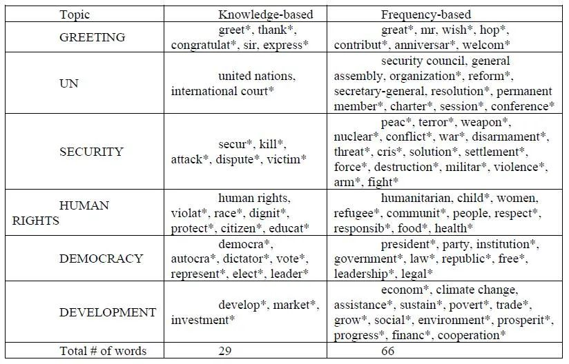
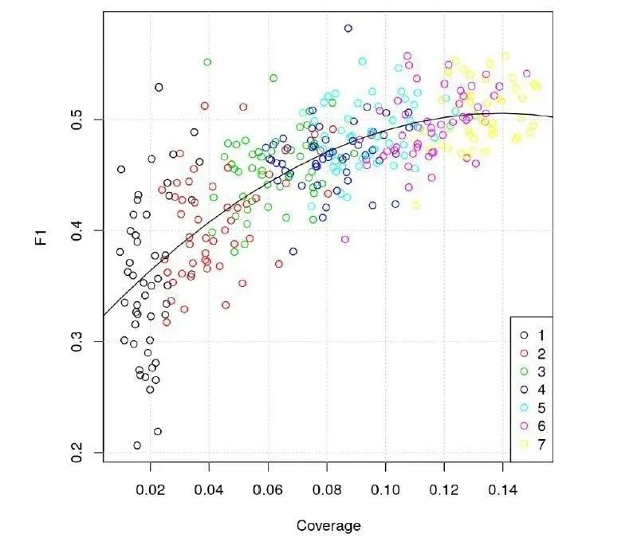
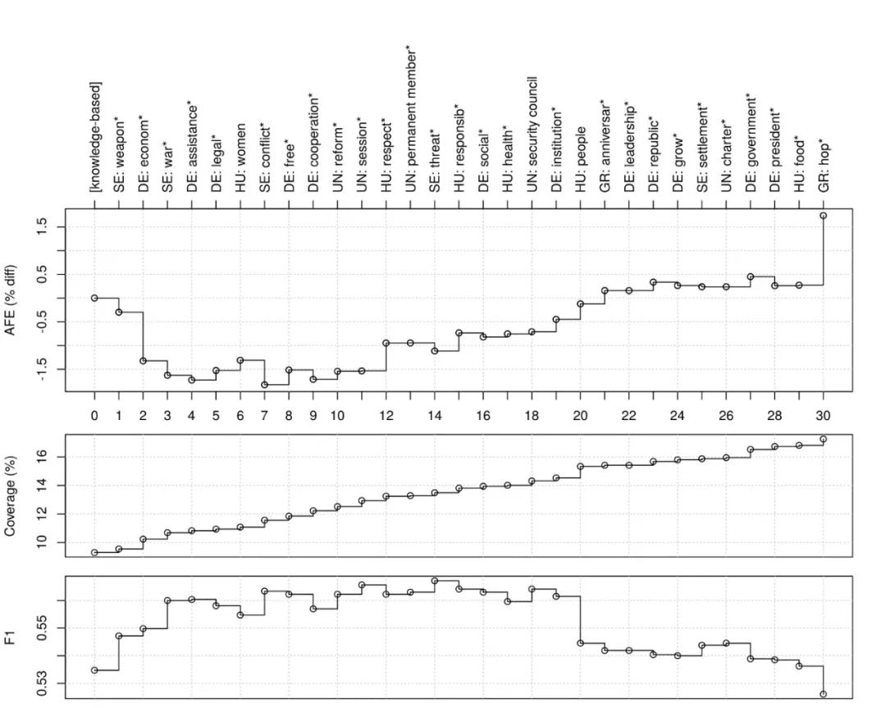
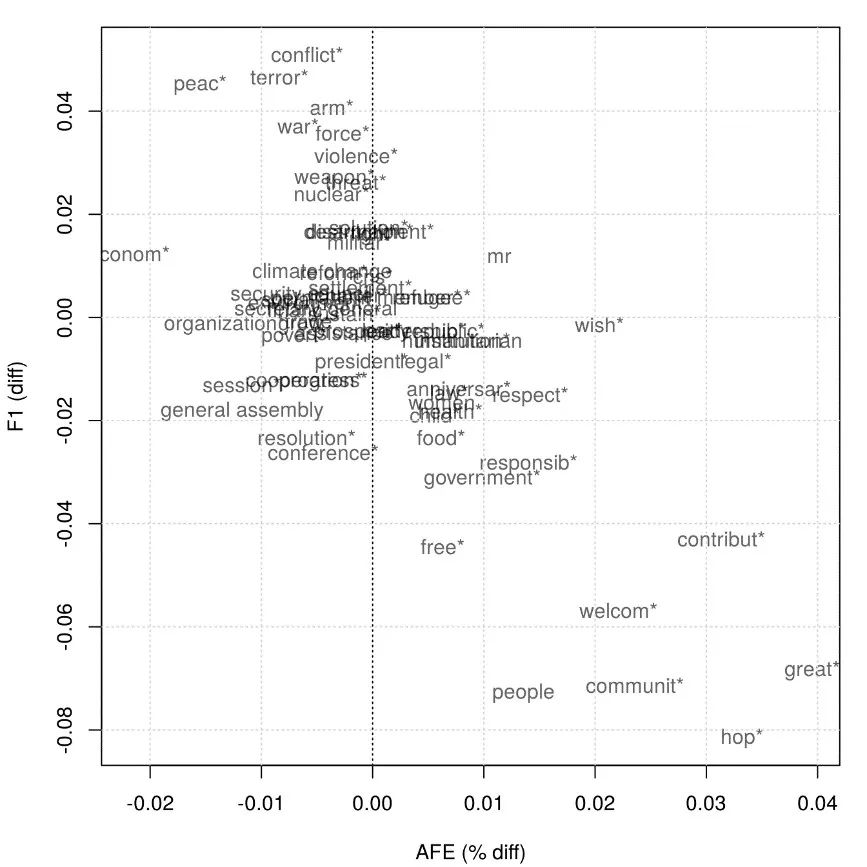
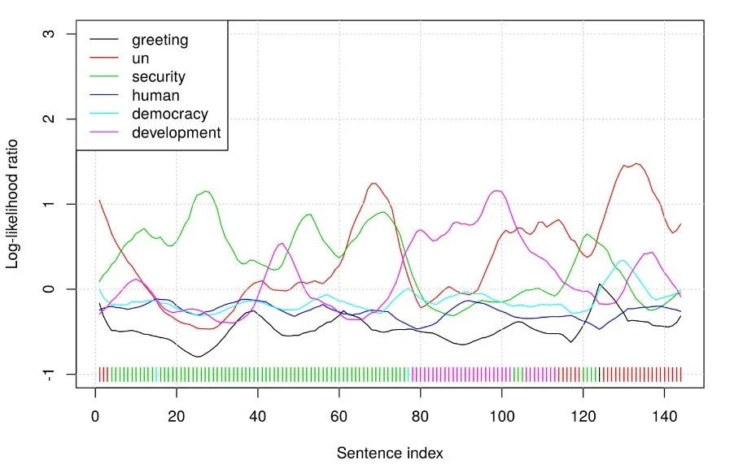
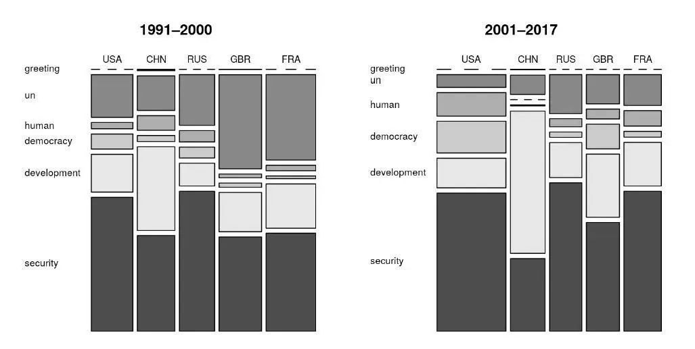

收录于合集 #专栏文章 11个
文献来源： Watanabe, Kohei, and Yuan Zhou. “Theory-Driven Analysis of Large Corpora: Semisupervised Topic Classification of the UN Speeches.” Social Science Computer Review. Online First.
作者简介： 渡边耕平（Kohei Watanabe）, 奥地利因斯布鲁克大学政治学系和数据科学中心高级助理教授；周源（Zhou Yuan），日本神户大学政治学系博士研究生，政文观止Poliview特邀作者。
引 言
在国际关系理论的第三次大辩论中，建构主义国际关系理论异军突起，成为最受学者青睐的理论之一。话语分析是建构主义学者常用的研究方法，被广泛应用于战争、反恐、民族主义等研究领域。话语分析对于人们理解国际政治背后一些深层次的逻辑起到了非常重要的作用。然而，直到近年，多数话语分析研究都是采取人工编码方式，这一方面带来了比较高昂的分析成本，另一方面也存在研究者将主观偏见带入研究的风险。
随着政治学者对量化文本分析方法的探索，一些大规模语料库被建立起来并提供公开利用。Alexander Baturo等人构建的联合国大会一般性辩论语料库（UN General Debate corpus，以下称UNGD语料库）便是其中之一。每年秋季，各国领导人（或其代表）都会在联合国大会进行一次15分钟左右的发言，阐述该国的外交政策和对重要国际问题的立场。领导人一般会选择用本国语言发言，但同时会提交一份官方英文翻译，用于公布在联合国网站。UNGD语料库将1970-2017年（目前已更新至2018年）的联合国大会一般性辩论进行了文本化处理，研究者可以相对简单地将该数据用于各类文本分析模型。
有的学者已经使用LDA主题模型等无监督学习方法对UNGD语料库进行文本分类。然而，无监督学习方法产出的结果与先前人工编码的研究结果存在很大出入，也很难从理论上进行较为合理的解释。这是因为，研究者很难对无监督学习模型进行较为有效的干预，使其过程符合用于分析的理论。有监督学习方法可以在一定程度上克服这一缺点，但是需要通过人工标注大量数据来得到一份训练数据库，使用成本较为高昂。
本文的目标在于提供一种控制和成本相对平衡的方法，使研究者既可以根据自身的理论在一定程度上对文本分析过程进行干预，又不至于因为干预成本过于高昂而难以实行。在下文中，我们将提出Newsmap这一半监督学习文本分类模型，并对其在文本分类任务中的表现进行评估。
半监督学习技术
计算机科学家们开发了大量的半监督学习技术，其核心思想是利用少量的标注样本和大量的未标注样本来进行模型训练。渡边耕平将词典分析与朴素贝叶斯分类器结合，开发出一种新的半监督学习文本分类模型。由于该模型最初被用于国际新闻的地理分类，他将该模型命名为Newsmap。事实上，Newsmap不仅可以用于新闻报道的地理分类，也可用于各类文本的主题分类。Newsmap模型需要的监督不是大规模的人工标注数据，而仅仅是一个研究者根据自身的数据和研究问题所做成的小词典。在半监督学习方法中，词典中的词汇被称为“种子词汇（seed words）”。首先，Newsmap模型将在整个语料库中搜索种子词汇，从而给各个文档进行标注。然后，这些标签将用于估计语料库中的特征与各个标签的关系，从而计算各个文档归类于各个主题的概率。好的种子词汇能够有效提高模型的分类准确度，而坏的种子词汇可能大大降低模型的表现。可见，使用Newsmap模型最重要的一步便是设计一个相对精确的词典从而实现精确度较高的分类。
下面，我们将通过一系列实验来探索如何选取词典中的种子词汇。
实 验
为了进行文本分类实验，我们从UNGD语料库1991年至2017年的数据中每年选取了一个国家的发言。我们在选取样本时，充分考虑了发言国家的国际影响力、地理位置、工业化水平等因素。另外，由于所有样本均为冷战后的发言，发言主题具有相对的一致性。选取样本后，我们将所有发言分割为句子，并将每一句话人工分类到以下六个主题之一：开场白、安全问题、发展问题、人权问题、民主问题以及联合国问题。我们将人工分类的结果作为黄金标准（gold standard），以此来评估模型的表现。
种子词汇选择
对于每个目录，我们定义了两套种子词汇：基于知识的种子词汇（knowledge-based seed words）和基于频率的种子词汇（frequency- based seed words）。基于知识的种子词汇是根据我们作为该领域研究者的背景知识以及各类相关文献的术语表和索引等选取，而基于频率的种子词汇是从整个语料库词频前300的特征中选取。表1 列出了我们在实验中使用的种子词汇。我们在词典中使用了通配符来使各个种子词汇更加一般化。
建立词典后，我们分别将基于知识的种子词汇、基于频率的种子词汇以及两者的结合用于Newsmap模型对样本数据进行分类。我们使用F1 score来评估模型表现，其计算方法为精确率和召回率的调和平均数。结果发现，基于知识的种子词汇表现（F1 = 0.53）略优于基于频率的种子词汇（F1=0.52），而两者结合使用的结果表现最优（F1=0.57）。需要注意的是，单句分类对于任何模型来说都是一项相当困难的任务，因为每个句子中含有的特征数量是十分有限的。
表1 种子词汇

实验1:种子词汇的覆盖
**
**
为了研究种子词汇的数量与分类精确度的关系，我们随机抽取1-7个种子词汇投入Newsmap模型来模拟计算分类结果的F1 score。从图1可以看出，随着种子词汇数量的增加，分类结果的F1 score也有了明显的改善，而种子词汇的数量达到7个的时候，模型的表现出现了相对的平稳。由此可见，增加种子词汇的数量，尤其是增加高频种子词汇，可以有效改善模型分类的结果。
 图1 种子词汇的覆盖与F1
实验2:平均特征信息熵
平均特征信息熵（average feature entropy，以下称AFE）是一个衡量信息处理过程中信息量的统计指标。在我们的实验中，如果一个新的种子词汇增加后AFE变大，说明该词汇随机属于多个主题的可能性较高，反之，如果AFE变小，说明该词汇倾向于出现在某一主题之中。在下面的实验中，我们以基于知识的种子词汇为基准，随机从基于频率的种子词汇中选取一个词汇添加，然后计算AFE和F1 score，从而发现它们的相关关系。

图2 种子词汇带来的AFE、覆盖率以及F1 score的变化
从图2可以看出，在初始阶段F1 score随着种子词汇的添加逐渐有了提高，然而，当“people” (20th)和 “hop*” (30th)被添加进去时，AFE增加，F1 score出现了急剧的下降。同样的负相关在“legal*” (5th), “women” (6th), “respect*” (12th), “responsib*” (15th), “institution*” (19th), “anniversary*” (21th) 以及“government*” (27th)等处也有出现。我们对此过程进行了100次重复模拟，发现AFE和F1 score之间存在显著的负相关（r=−0.49, p<0.001）。由此我们认为，AFE的增减可以用于判断一个词汇适不适合作为种子词汇被使用。
实验3:选择标准
我们通过计算AFE，定位出了23个可能降低模型分类表现的“风险种子词汇”。我们将这些风险词汇从词典中去除之后，发现Newsmap模型的F1 score从原来的0.57上升到了0.61，较原来有了明显的改善。图3显示了每个词汇带来的AFE和F1 score的变化。

图3 定位风险词汇
实验4:语境平滑处理

图4 对乌克兰1993年联合国大会发言的平滑化处理
虽然我们通过AFE定位和去除风险种子词汇提高了Newsmap模型的表现，但是由于很多句子之中并无较为明显的话题指标，模型很难对这类文档进行准确的分类。在人工标注之时，我们可以根据上下文语境来对缺乏话题指标的句子进行分类。为了模仿这一过程，我们对模型分类结果进行了平滑处理，使每句发言的前后3句话纳入对该句分类的考虑依据之中。图4显示了平滑处理可以有效捕捉到句子之间话题的连接与转换。经过语境平滑处理后，分类结果的F1 score提高到了0.72。
案例研究
为了展示该方法可能的应用，我们使用Newsmap模型对冷战后五个常任理事国在联合国大会的发言进行了分类。图5揭示了几个较为有趣的现象。首先，进入20世纪之后，随着联合国改革以及维和行动等的受挫，关于联合国问题的讨论在各大国的发言中明显减少。其次，人权问题和民主问题在美、英、法的发言中比例有了很大提高，但是中国对这些问题采取了回避的策略。再次，由于9/11之后恐怖主义给欧洲带来的威胁，安全问题在英国和法国的发言中比重有了一定上升。

图5 对联合国五常发言的分类结果
结 论
相对于简单的词典分析和监督学习方法，半监督学习方法在国际关系研究中具有明显的优点：首先，研究可以自定义文本分类的目录以确保分类结果与研究的理论框架一致；其次，研究者只需要花小成本制作一个小的词典而无需进行大量的人工标注。另外，半监督学习模型也可以相对容易地应用到非英文文本的分析之中，从而增进我们对来自世界各地的数据的理解。随着越来越多同时掌握学科知识以及方法技术的年轻学者的出现，我们希望半监督学习方法能够被更多地用于社会科学的各类研究之中。
编辑：康张城
【政文观止Poliview】系头条号签约作者